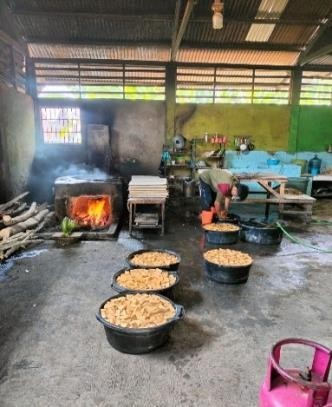

Produk Tahu Sumber Mulya
Produk utama kami terdiri dari tahu putih dan tahu goreng, yang dipasarkan melalui warung lokal, pasar tradisional, dan dari tempat produksi langsung.
Tahu Putih
Tahu putih bertekstur lembut dengan kadar air tinggi. Cocok sebagai lauk sehari-hari dan dijual segar dalam kemasan plastik.

Tahu Goreng
Tahu goreng siap konsumsi dengan luar renyah dan dalam putih lembut. Dikemas plastik dan cocok untuk camilan atau lauk.